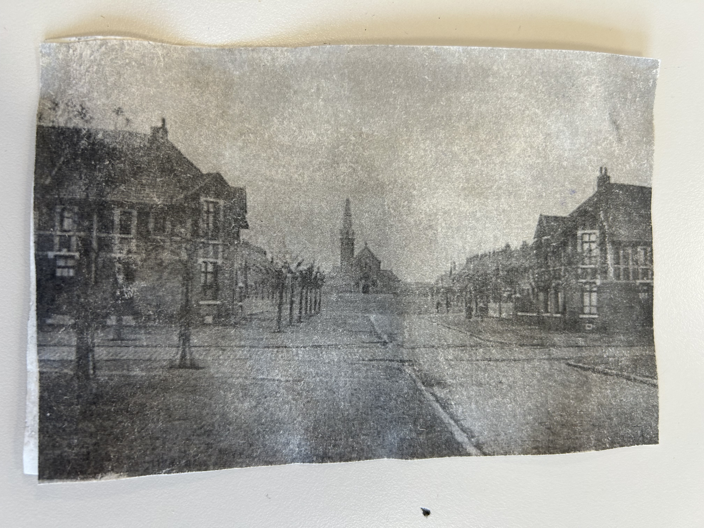
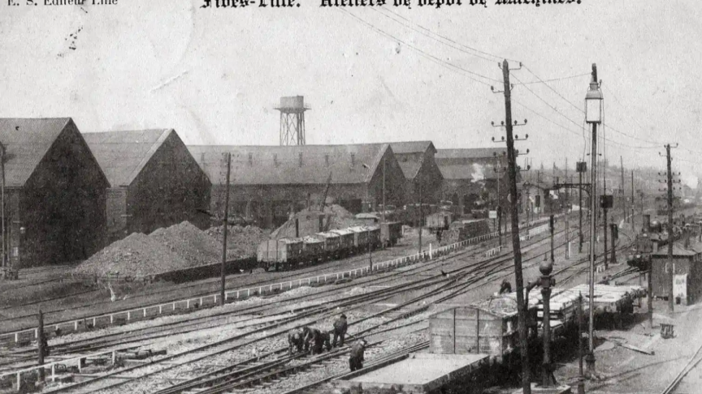
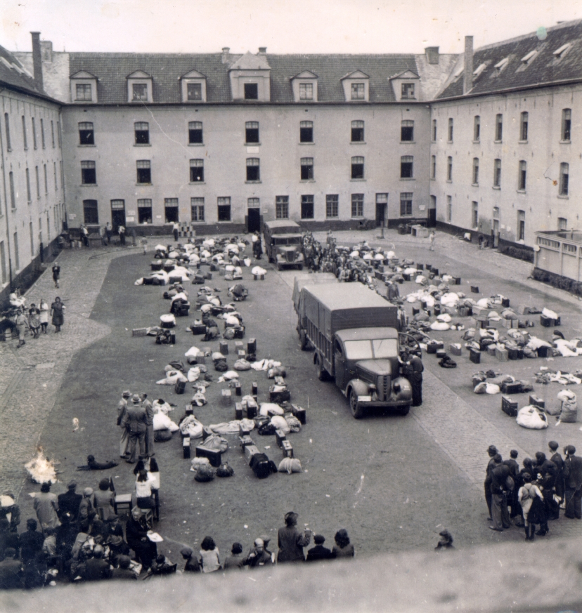

La carte postale
Description :
Le vendredi 11 septembre 1942 les familles juives du Nord et du Pas-de-Calais se retrouvent pour fêter la
nouvelle année, la fête de Roch Hachana. Une journée de partage que les Allemands et la police française choisissent pour organiser la
rafle la plus importante qu’ait connue la région durant la Seconde Guerre mondiale. 500 à 600 familles juives
dans la métropole de Lille sont arrêtées. Des adultes et des enfants menés de force à Malines, en Belgique,
dernier arrêt avant Auschwitz.Les premiers juifs faits prisonniers sont acheminés à Lille, dans la gare de
Fives, pour attendre les convois en provenance du Bassin minier. Lors de cette arrestation plusieurs personnes
ont aidé à la fuite de certains juifs. C’est l’un des plus grands sauvetage de la Seconde Guerre mondiale. Au
moment du départ, le père écrit à sa fille, Margot, restée à Lille pour ses études, une carte postale. Un
cheminot la retrouve et la poste.



Gare de Lille fives

La caserne Dossin